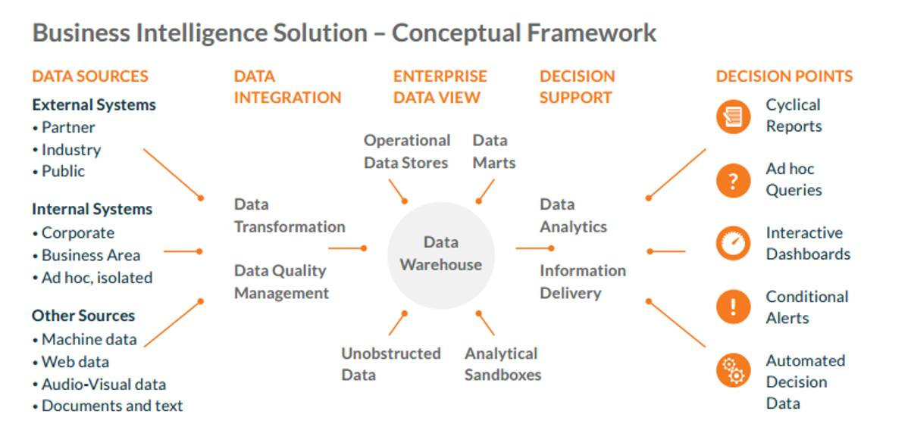
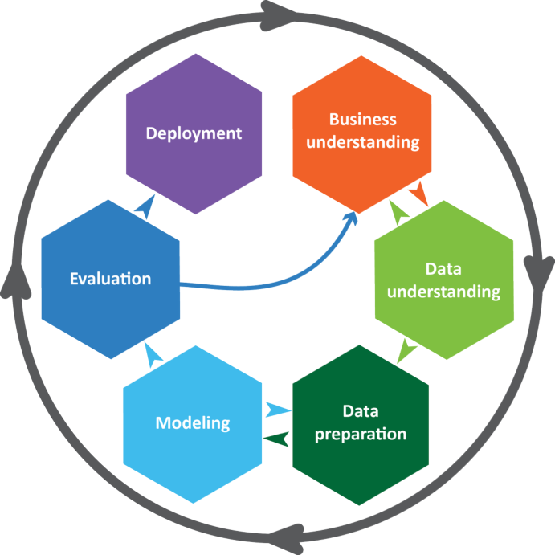
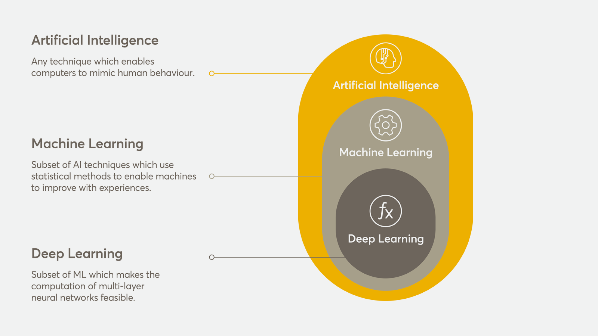

Įvadas į duomenų analitiką
lekt. Šarūnas Kasnauskas, 2018Apie mane
SISV programos magistras
Verslo analitikos (BI) architektas @BalticAmadeus
Bendraukime: sarunas.kasnauskas@gmail.com
Bendraukime apie: pasenusias technologijas, muzikos instrumentus, duomenų analitiką,..
Programa
- Duomenų analitikos esmė
- Sąvokos
- Big Data Problemos
- Duomenų tipai ir panaudojimo atvejai (Žaliava)
- Struktūruoti duomenys
- Nestruktūruoti duomenys
- Duomenų integravimas ir talpinimas
- Duomenų saugyklos, duomenų kubai
- Hadoop technologijų rinkinys
- Duomenų tyryba (Data Mining) ir mašininis mokymasis (Machine Learning)
- CRISP-DM
- Modeliai ir jų vertinimas
- Analitikos rezultatai
- Įžvalgos
- Vizualizavimas
- Analitinė orgnanizacija
- Organizacijos analitikos brandos modeliai
- Rolės ir procesai organizacijoje
- Svečių paskaitos
- Atvejo analizė
Vertinimo kriterijai:
- Testas - 40%
- Pranešimas - 20%
- Praktiniai užsiėmimai (R) - 40%*
*Užsiėmimus ves Dr. Saulius Preidys
Pranešimai
Temų sąrašas: http://bit.ly/2N3njKT
Pasirinktą tema iki 2018-09-25 23:59:59 atsiųskite į sarunas.kasnauskas@gmail.com
Atsiskaitymo datą sutarsime vėliau
Duomenų analitikos esmė
BI? ML? DM? AI?..
Sąvokos
Business Intelligence (BI) - Verslo analitka (VA)
Data Mining (DM) - Duomenų tyryba (DT)
Machine Learning (ML) - Mašininis mokymasis (MM)
Artificial Intelligence (AI) - Dirbtinis intelektas (DI)
Verslo analitika (VA)
Procesas, apimantis informacijos gavimą ir analizę, intuicijos ir supratimo formavimą ir leidžiantis priimti neformalius ir geresnius sprendimus.
Platus terminas, apimantis infrastruktūrą, įrankius, geriausias praktikas ir jų taikymą duomenų prieigai ir analizei, leidžiančiai pagerinti ir optimizuoti sprendimus ir verslo našumą.
Verslo analitika (VA)
Duomenų tyryba (DT)
Įdomių struktūrų (modelių, ryšių, statistinių modelių, šablonų) radimas duomenų bazėse.
Didelių duomenų kiekių tyrinėjimas ir analizė automatizuotu arba pusiau automatizuotu būdu, siekiant rasti naudingus modelius (angl. patterns) ir taisykles.
Duomenų tyryba (DT)
Duomenų tyryba (DT)
- Veiklos supratimas
- Duomenų supratimas
- Duomenų parengimas
- Modeliavimas
- Įvertinimas
- Diegimas
MM ar DI?
Didieji duomenys (Big Data)?
Tai duomenų kiekis, kurį sunku apdoroti su turimomis technologijomis per priimtiną laiką.
Tai yra platus terminas, paprastai pabrėžiantis, jog duomenų apimtis tokia didelė, kad jai netinkami tradiciniai saugojimo ir apdorojimo metodai bei programos.
Keturios V